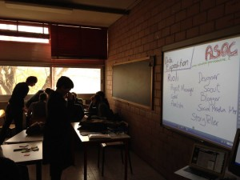

{kind=link}
In tanti, durante i nostri viaggi, ci hanno detto che bisogna iniziare dai bambini e dai ragazzi per cambiare davvero le cose o almeno per tentare nuove strade. Si, è vero, perché non c’è retorica nel dire che saranno loro gli adulti di domani, ma è anche vero che per essere loro la leva del cambiamento è il caso di iniziare da subito a considerarli cittadini e soprattutto potenziali cittadini attivi.
A Scuola di OpenCoesione nasce in linea con questa prospettiva. Come già avevamo accennato qui, si tratta di un progetto nato in collaborazione tra MIUR e DPS tramite il quale per la prima volta arriva in aula un percorso di didattica sperimentale. I ragazzi partono da un’analisi delle problematiche del territorio, individuano dei progetti legati a tali tematiche da monitorare a partire dal portale OpenCoesione e altri dataset per poi passare dal monitoraggio civico alla costruzione di un progetto didattico interdisciplinare. Il tutto utilizzando le tecniche del data journalism e dello storytelling, senza porre limiti alla fantasia: il progetto potrò assumere la forma di un’app, di un video, di un fumetto e molto altro.
La prima fase del progetto sta coinvolgendo 7 “scuole polo” in tutta Italia, nella seconda si punta ad un’espansione a macchia d’olio. Nelle scuole pilota si sta testando un processo in cui la presenza fisica del team del progetto non è necessaria e il rapporto tra la didattica e la progettualità sia fluido, contestuale, creativo e orientato al generare competenze durevoli nelle scuole, con i docenti. Per questo il lavoro si basa principalmente su materiali didattici e incontri on line, ma ogni scuola pilota ha un “alfiere” sul territorio cioè un cittadino o un gruppo di cittadini attivi volontari che diventano un punto di riferimento e un raccordo tra la scuola e il centro.
{kind=link}
Il 10 febbraio ASOC arriva a Napoli, all’Istituto Tecnico Industriale Amedeo Righi, per la prima lezione. OpenPompei, nel suo ruolo di interfaccia tra istituzioni e società civile, non poteva che porsi al servizio del progetto e della scuola. Siamo dunque orgogliosi di poter svolgere il ruolo di “alfieri”, di essere a disposizione dei ragazzi dell’Amedeo Righi e di tutte le altre scuole che nella seconda fase vorranno condividere con il team di ASOC e con noi questa sperimentazione.
Ci vediamo tra i banchi di scuola lunedì e qui sul blog a breve con il racconto del primo giorno.